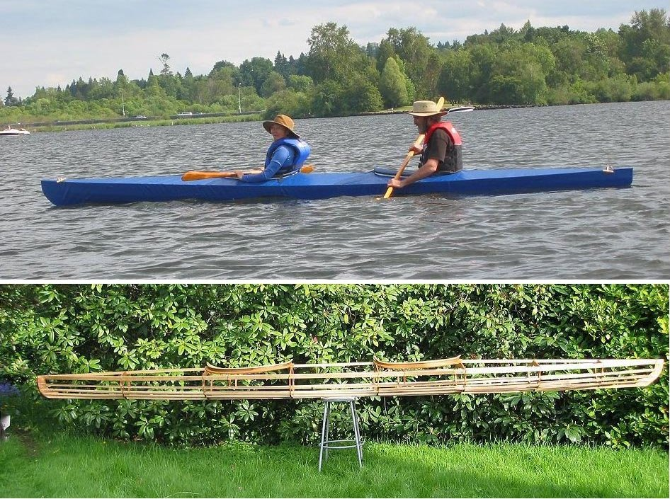

Sea Tour Double by Alan and Kay (US)
Menu
Previous Page
Next Page

Kay and Alan, from Seattle, Washington paddle their Sea Tour Double ( 20' X 26" X 49 lbs). The wood frame is lashed / epoxied and the skin is PVC.